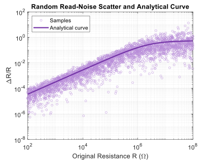
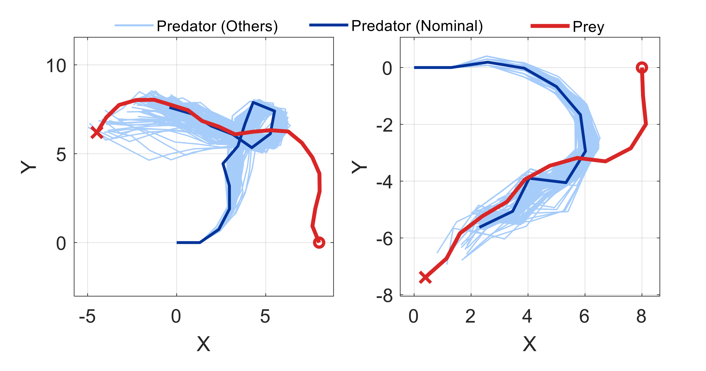
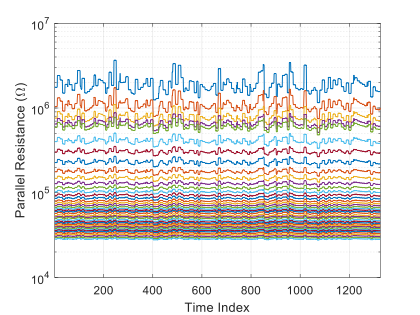

Compact and Energy-Efficient Memristive Spiking Neuromorphic Accelerator for Bio-inspired Interception Tasks
This work presents a compact and energy-efficient memristive spiking neuromorphic accelerator for bio-inspired interception tasks. The design maps a 4-30-1 spiking neural network onto 1T1R memristor crossbars for in-memory synaptic computation, while a separated input and membrane-node integrate-and-fire neuron is developed to improve temporal integration fidelity during array-interfaced operation. The accelerator is implemented and evaluated at the circuit level using the SkyWater SKY130 PDK, demonstrating reliable spike-based inference, strong agreement with the software SNN baseline, and efficient real-time interception performance.